01 / Daily Wear
Wear Time
24/7
Wear daily. Know more.
Daily wear reveals the full picture.
Full-day signal
Wear > Read > Decide
Track. Understand. Improve. Wellex helps your body respond better across the whole day.
Daily wear reveals the full picture.
Health data works best when wear becomes routine.
Track how strain, calm, and recovery connect.
Know when to push, recover, and reset.
Understand how your body responds all day long.
Measure what matters. Recover smarter.
Lightweight. Durable. Made to move with you.
Your data stays yours. Always.
Light for sleep. Durable for work and training.
Wellex turns continuous wear into clear daily guidance.
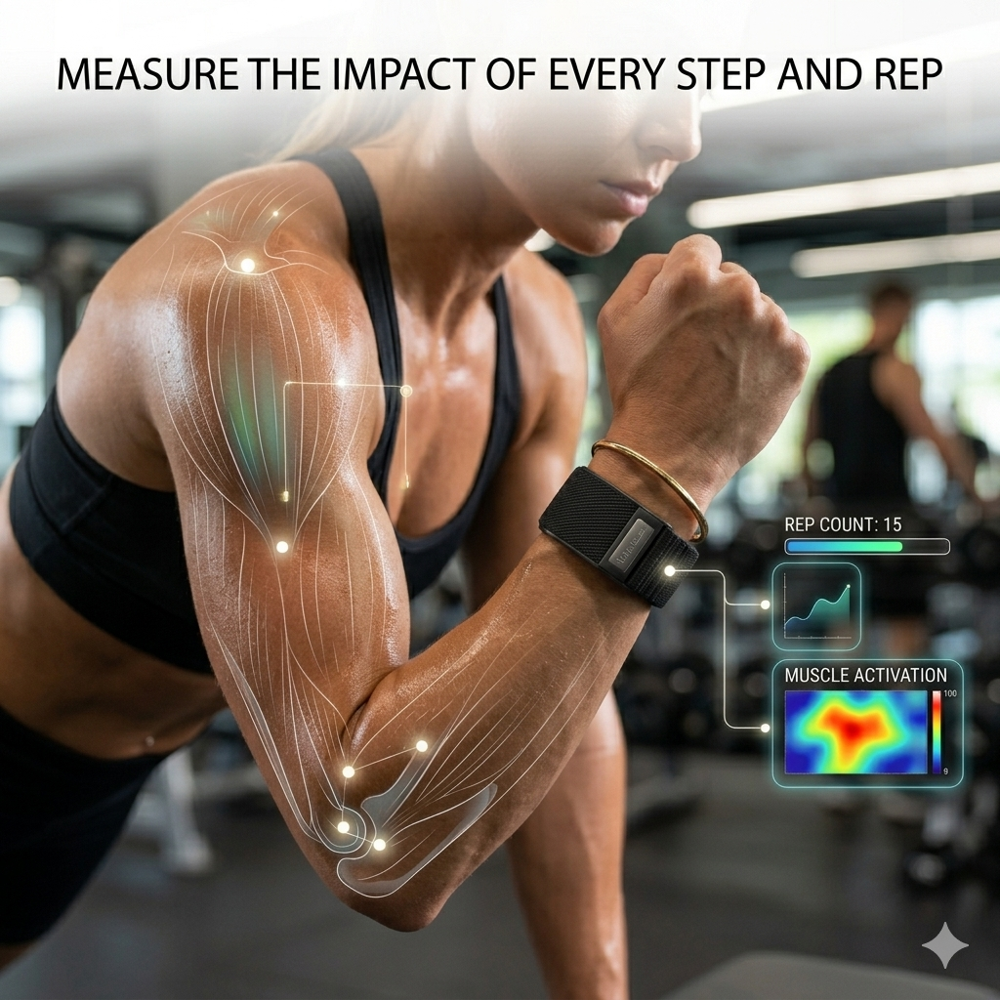
Sleep, strain, recovery, and heart data in one view.
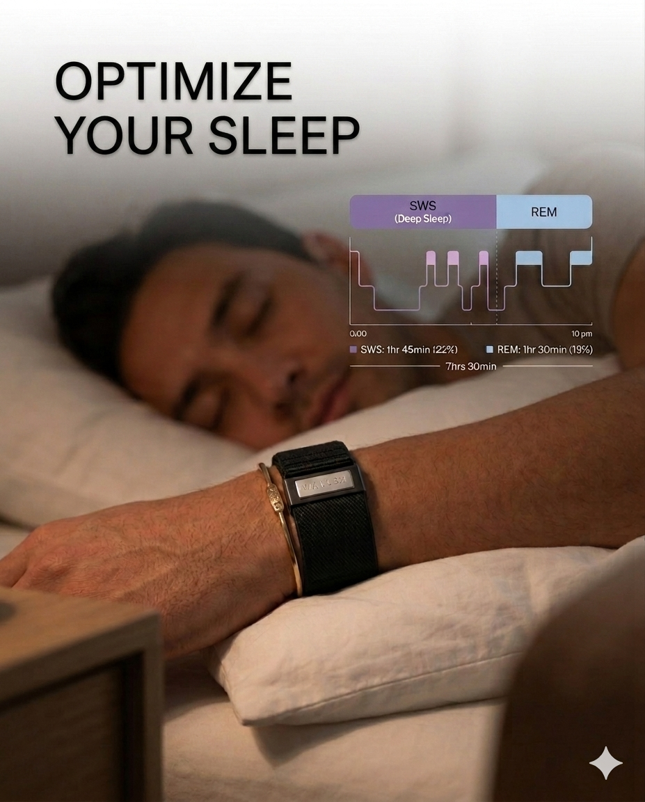
Track sleep quality, rhythm, and recovery.
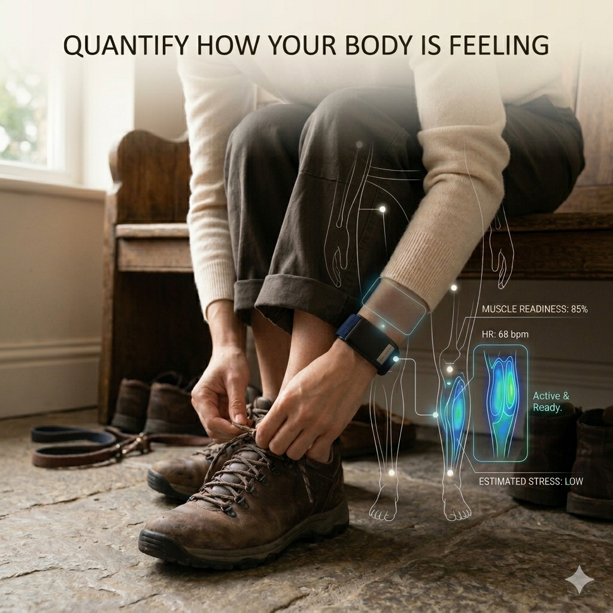
Use HRV, resting heart rate, strain, and recovery together.
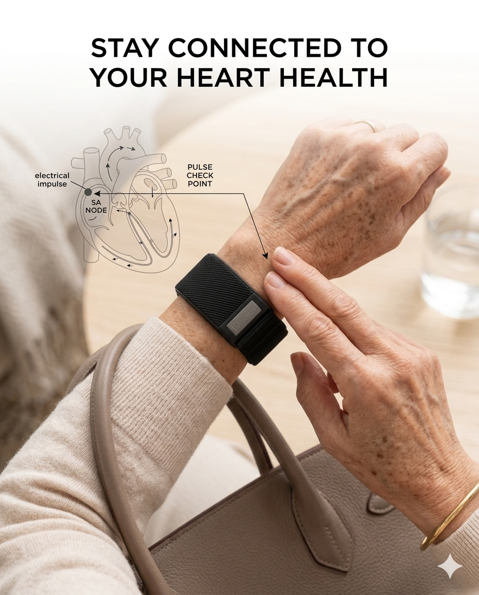
Follow daily heart rate and resting patterns.
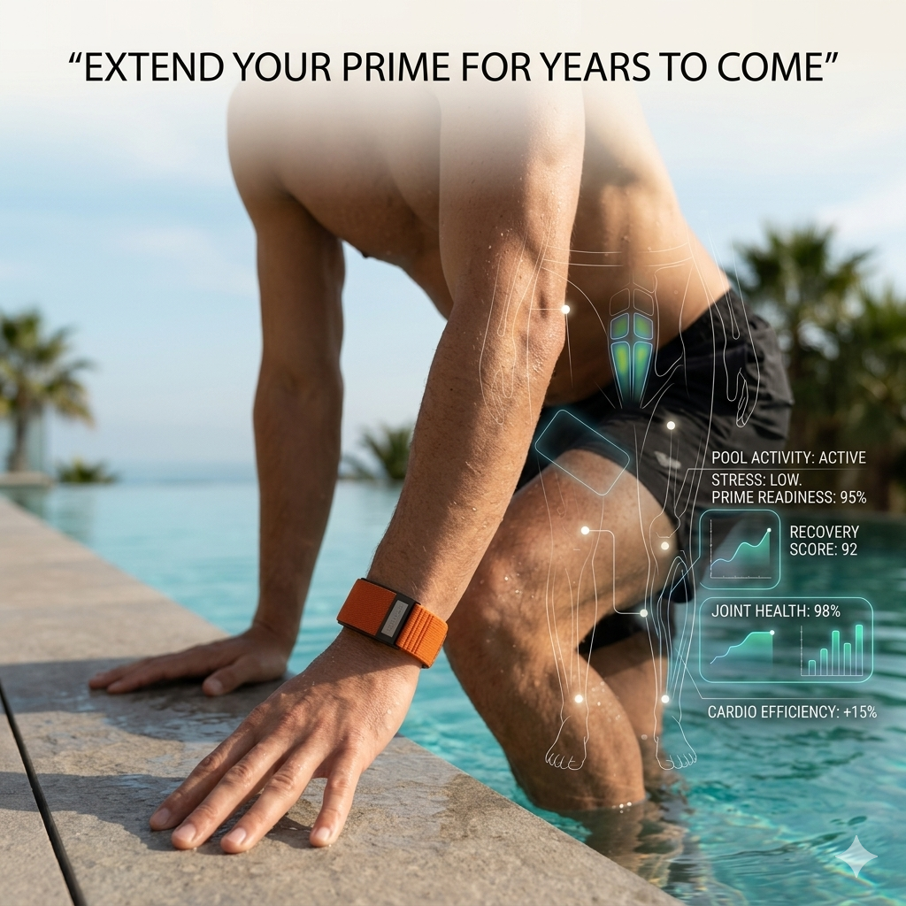
Use better habits to support a longer prime.
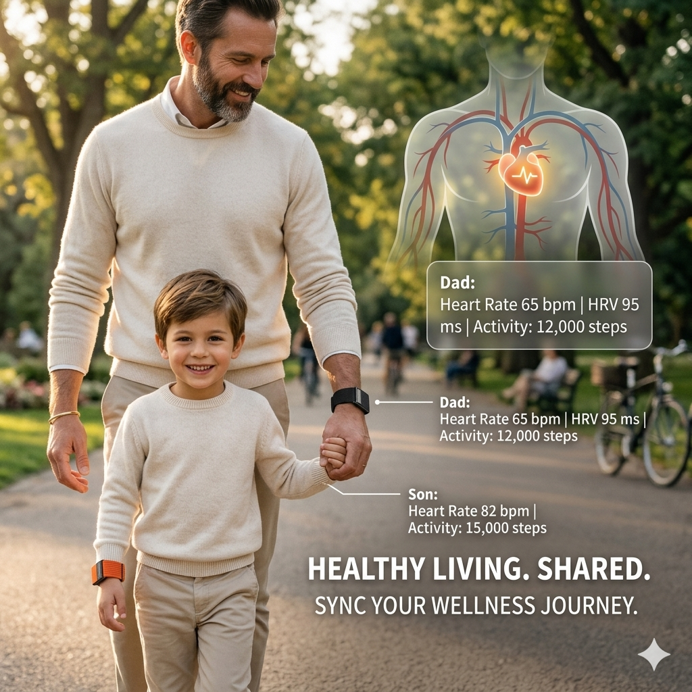
Sync your wellness journey.
Less noise. Better next steps.
Keeping it on turns isolated readings into one story.
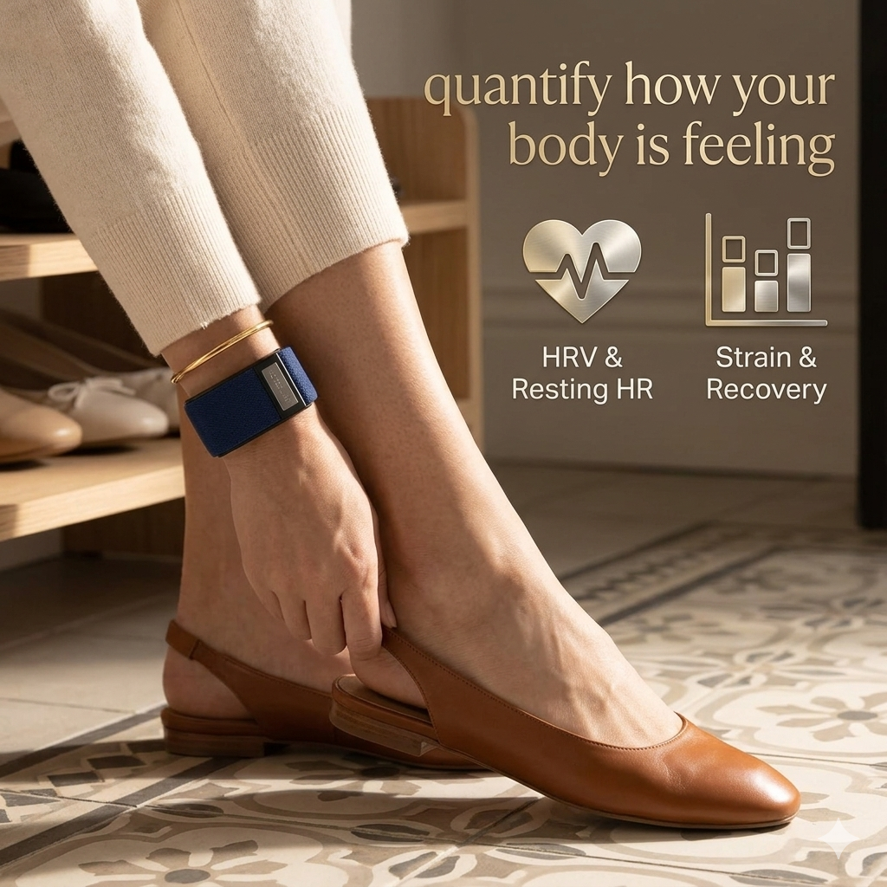
Read sleep, strain, recovery, and heart data together.
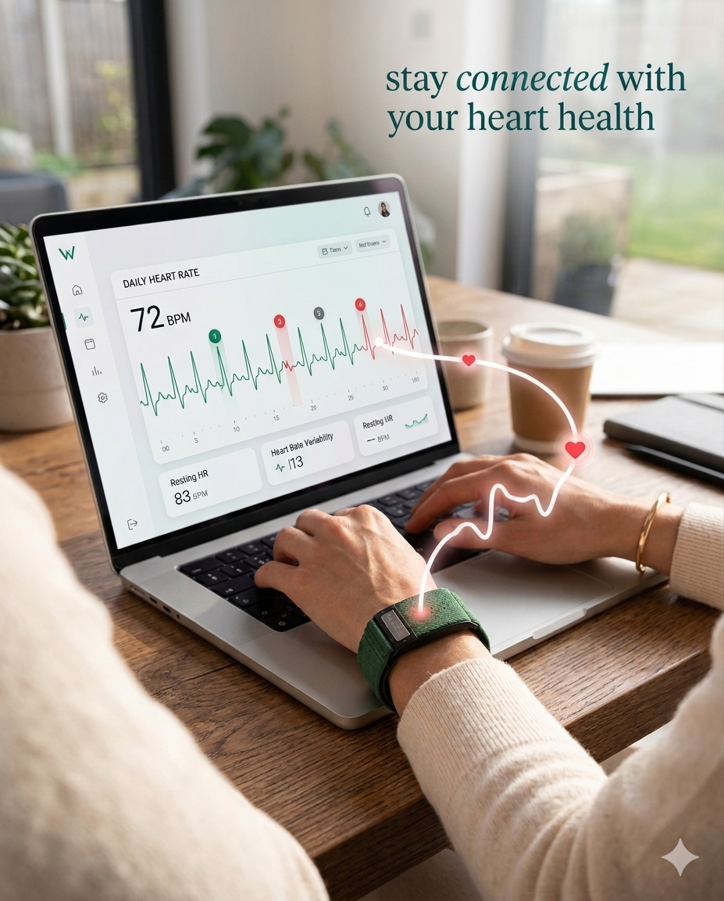
The app translates signals into useful guidance.
Better sleep and recovery should lead to better results.
Wellex connects data to decisions.
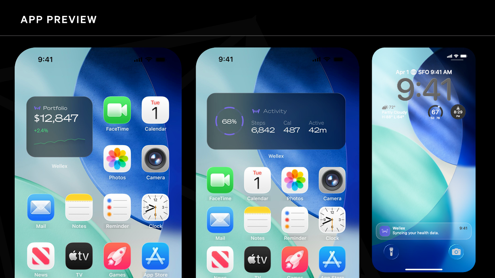
Track sleep quality, consistency, and rhythm.

Read intensity, output, and total load.
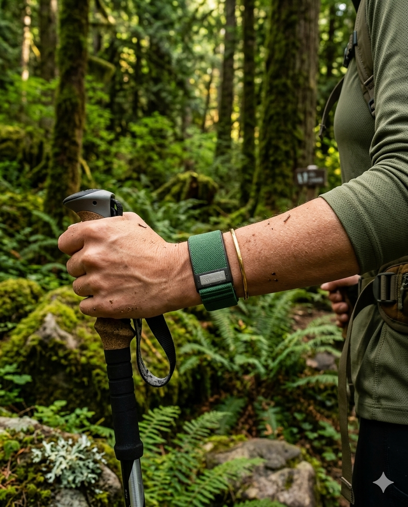
Recovery helps time effort and rest.
See how mental load affects the body.
Connect routines to real outcomes.
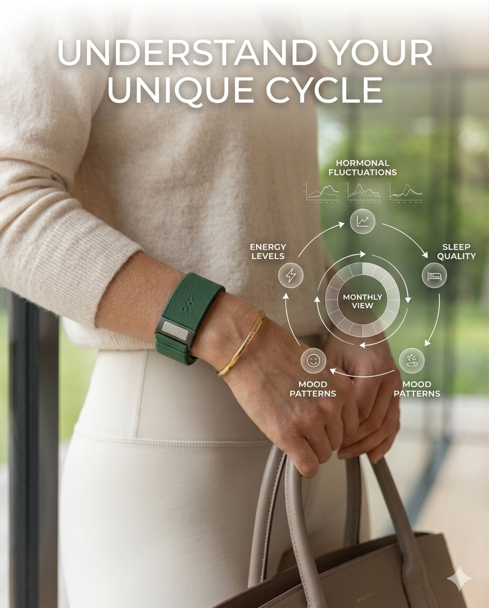
Bring separate signals into one direction.
Wear daily. Recover smarter.